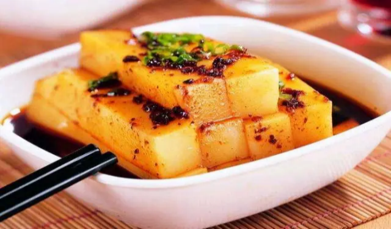
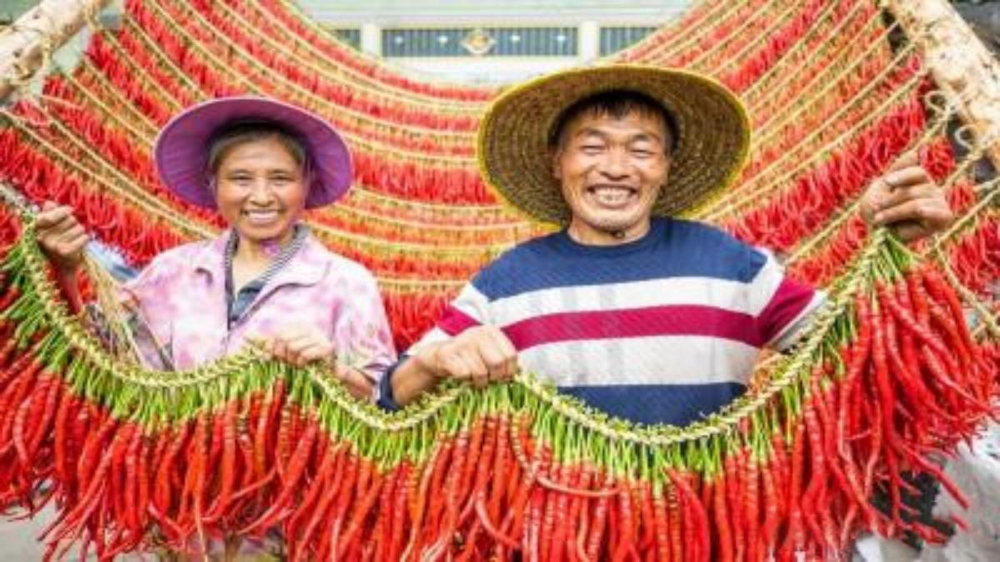
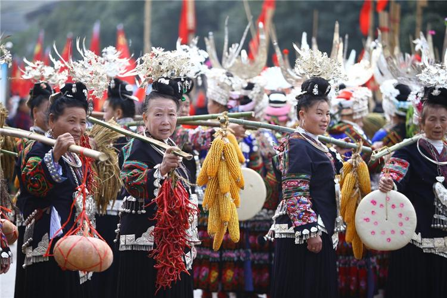

乡村振兴 | 梦奋新章
- 多彩贵州
- 民族风味
- 特色产业
乡村振兴 | 梦奋新章
- 传统盛典
- 非遗文化
- 聚黔数据
优势转化提升 旅游再次“井喷”
习近平总书记对贵州旅游发展寄予厚望，盛赞贵州是“公园省”
习近平总书记对贵州旅游发展十分关心，要求贵州丰富旅游生态和人文内涵，实现旅游业高质量发展。
省委、省政府深入贯彻落实习近平总书记重要指示，将旅游产业化上升为全省发展主战略中的重要内容。
贵州是世人向往的“避暑之地”。天然的夏季大空调、98%以上的空气质量优良天数比率和
良好的生态环境，沁人心脾。贵州还拥有丰厚的旅游资源“家底”。
这里的世界自然遗产数量高居全国榜首，拥有“地球绿宝石”荔波、赤水丹霞、海龙屯、
梵净山、亚洲第一大瀑布黄果树等众多世界级旅游资源，
以及超级大桥、中国天眼、茅台、“村BA”等众多世界级名片，红色文化、阳明文化、
屯堡文化、民族文化星光熠熠。
贵州围绕资源精深开发利用推进业态升级。统筹规划、计划、策划，加快推动荔波、黄果树打造世界级景区，全省景区服务品质进一步提升。 推出黔菜美食店90家、黔菜单品标准40个，贵州特色旅游商品购物店10家。出台《关于促进贵州民宿产业高质量发展的指导意见》、首批政策清单和等级划分标准，实施贵州民宿发展三年行动计划。 新增达五星级标准饭店3家、四星级饭店4家，新增品牌连锁酒店27家，新建提升露营基地44个。推动《多彩贵州风》《贵秀》等30个旅游演艺项目复演提升，新增10个剧本娱乐项目进景区。
贵州围绕资源精深开发利用推进业态升级。统筹规划、计划、策划，加快推动荔波、黄果树打造世界级景区，全省景区服务品质进一步提升。 推出黔菜美食店90家、黔菜单品标准40个，贵州特色旅游商品购物店10家。出台《关于促进贵州民宿产业高质量发展的指导意见》、首批政策清单和等级划分标准，实施贵州民宿发展三年行动计划。 新增达五星级标准饭店3家、四星级饭店4家，新增品牌连锁酒店27家，新建提升露营基地44个。推动《多彩贵州风》《贵秀》等30个旅游演艺项目复演提升，新增10个剧本娱乐项目进景区。
体验脱贫成就 助力乡村振兴


印象新贵州
一个被桥梁和隧道串起的高速贵州，一个被“算法”和“数据”赋能的数字贵州，一个以独特文化和奇山异水闻名的文旅贵州，一个拥有吉他、羽毛球、打火机等多个“之乡”美称的产业贵州，重塑着黔山贵水的印象，一个全新的贵州正呈现在世人面前。
云雾盘山绕，溪水穿寨流。山与水数万年的相依相生，造就了万峰林的群峰、黄果树的瀑布、荔波的小七孔；苗族的山歌、瑶族的药浴、水族的水书，众多民族文化和地域特色，给贵州的旅游赋予了独特内涵。
从“风生水起”到“落地生根”再到“集聚乘势”，贵州大数据发展迈过三级跳。不沿边、不靠海的贵州，靠着耕“云”种“数”，找到一片属于自己的“蓝海”。“数字贵州”“中国数谷”，未来可期。
绿水青山就是金山银山。数据显示，今年上半年，贵州接待游客人数、旅游总收入分别同比增长15.8％和26.2％，旅游业恢复到2019年同期水平，有效带动餐饮、住宿等服务业加快恢复。
云雾盘山绕，溪水穿寨流。山与水数万年的相依相生，造就了万峰林的群峰、黄果树的瀑布、荔波的小七孔；苗族的山歌、瑶族的药浴、水族的水书，众多民族文化和地域特色，给贵州的旅游赋予了独特内涵。
从“风生水起”到“落地生根”再到“集聚乘势”，贵州大数据发展迈过三级跳。不沿边、不靠海的贵州，靠着耕“云”种“数”，找到一片属于自己的“蓝海”。“数字贵州”“中国数谷”，未来可期。
绿水青山就是金山银山。数据显示，今年上半年，贵州接待游客人数、旅游总收入分别同比增长15.8％和26.2％，旅游业恢复到2019年同期水平，有效带动餐饮、住宿等服务业加快恢复。
—— 体验脱贫成就 助力乡村振兴 ——

- 舌尖上的贵州 -

青岩猪脚：一道具有浓郁地方特色的美食。选用当地优质猪蹄为主要原料，经过精心制作而成。
最重要的是，青岩猪脚代表了当地人民对美食文化的传承与发扬。它不仅是贵州地方特色菜品的代表之一。
米豆腐：贵州省贵阳市的特色美食之一。它以独特的制作工艺和口感而闻名于世。 贵阳米豆腐有着细腻滑嫩的口感。它不仅可以直接食用，还可以作为其他菜肴的主料使用。 无论是清汤还是红烧、麻辣等调味方式都能与之完美搭配。
贵阳辣子鸡：最早是收录在川菜菜谱中的，当时的名字叫做贵州鸡，后来又被渐渐叫成辣子鸡并且流传至各个地区。 既可以是家里饭桌上经常出现的一道菜，也可以是出现在宴席上的一道体现主人厨艺的大菜，是一道绝大多数人都知道的名菜。
黔五福腊肉：贵州著名土特产之一。熏好的腊肉，透明发亮，色泽鲜艳，黄里透红，吃起来味道醇香，肥不腻口，瘦不塞牙。不仅风味独特，营养丰富，而且具有开胃、消食等功效。
米豆腐：贵州省贵阳市的特色美食之一。它以独特的制作工艺和口感而闻名于世。 贵阳米豆腐有着细腻滑嫩的口感。它不仅可以直接食用，还可以作为其他菜肴的主料使用。 无论是清汤还是红烧、麻辣等调味方式都能与之完美搭配。
贵阳辣子鸡：最早是收录在川菜菜谱中的，当时的名字叫做贵州鸡，后来又被渐渐叫成辣子鸡并且流传至各个地区。 既可以是家里饭桌上经常出现的一道菜，也可以是出现在宴席上的一道体现主人厨艺的大菜，是一道绝大多数人都知道的名菜。
黔五福腊肉：贵州著名土特产之一。熏好的腊肉，透明发亮，色泽鲜艳，黄里透红，吃起来味道醇香，肥不腻口，瘦不塞牙。不仅风味独特，营养丰富，而且具有开胃、消食等功效。
- 民族食谱 -
苗家酸汤鱼：苗族人民在长期的生活中总结出来的一道佳肴，在许多大中城市成为一道独特的饮食风景线，并已越来越受到人们的欢迎。
苗族同胞爱吃酸食，在贵州的苗寨中就有“三天不吃酸，走路打罗圈”(形容走路无力)的说法。在酸食菜肴中，尤其以酸汤鱼贵州是一个多民族地区， 擅长制酸，亦喜食酸食。在贵州众多酸汤中，以苗家酸汤最为著名，其与众不同的地方是酸香丰富，是苗族传统的风味名菜。
行苗家酿制酸汤取自高山上的泉水和自种的香糯酿制而成，味型独特、酸鲜可口，在中式烹调味型寻到酸汤风味的味型这道菜最为有名。
坨坨肉：坨坨肉是贵州彝族人民吃肉食的基本制作方法。 在制作上，不论猪、牛、羊，宰杀后均连骨带肉切成如拳头船大小的块块， 用清水煮至八成熟，便捞入簸箕内，撒上盐巴来回簸荡，使盐渗入即可食用。 吃时除放盐外，不放任何佐料，也不用碗筷，直接用手取而食之。
苗族同胞爱吃酸食，在贵州的苗寨中就有“三天不吃酸，走路打罗圈”(形容走路无力)的说法。在酸食菜肴中，尤其以酸汤鱼贵州是一个多民族地区， 擅长制酸，亦喜食酸食。在贵州众多酸汤中，以苗家酸汤最为著名，其与众不同的地方是酸香丰富，是苗族传统的风味名菜。
行苗家酿制酸汤取自高山上的泉水和自种的香糯酿制而成，味型独特、酸鲜可口，在中式烹调味型寻到酸汤风味的味型这道菜最为有名。
坨坨肉：坨坨肉是贵州彝族人民吃肉食的基本制作方法。 在制作上，不论猪、牛、羊，宰杀后均连骨带肉切成如拳头船大小的块块， 用清水煮至八成熟，便捞入簸箕内，撒上盐巴来回簸荡，使盐渗入即可食用。 吃时除放盐外，不放任何佐料，也不用碗筷，直接用手取而食之。
—— 贵州美食之旅 ——
十二个特色产业
茶叶、食用菌、蔬菜、生态畜牧、石斛、水果、竹子、中药材、刺梨、生态渔业、油茶、辣椒
贵州12个农业特色优势产业持续壮大
贵州12个农业特色优势产业持续壮大
贵州纵深推进12个农业特色优势产业发展
贵州12个特色优势产业中，茶园面积700万亩，辣椒面积545万亩，李子面积263.5万亩，刺梨面积200万亩，蓝莓面积19.3万亩，规模均居全国第一；猕猴桃、薏仁、太子参等产业规模进入全国前三；蔬菜、食用菌、火龙果等产业规模进入全国第一梯队。
“十三五”以来，贵州省高度重视现代山地特色高效农业，以12个农业特色优势产业发展为主要抓手，坚持党政主抓，高位推进，创新领衔机制，集约化投入，为按时高质量打赢脱贫攻坚战，推动贵州省经济社会持续稳定发展作出了积极贡献。 据介绍，下一步，贵州省农业农村厅将不断推进贵州省农业现代化进程，努力推动建成现代山地特色高效农业强省。
省第十二次党代会以来，我省立足资源禀赋、气候条件、产业基础和市场需求等，因地制宜发展现代山地特色高效农业。 围绕做大做强12个农业特色优势产业，构建现代农业产业体系、生产体系、经营体系，不断提高农业质量效益和市场竞争力，推动农村一二三产业融合发展。
从组织形式的强化到产销对接的细化再到农技服务的优化，我省强力推进农业结构调整，农业特色优势产业加快发展， 农业增加值增速位居全国前列，茶叶、辣椒、刺梨等种植规模全国第1，地理标志农产品达到100个。农业产业化国家重点龙头企业达到35家、 省级农业龙头企业达到903个。实施高标准基本农田建设和耕地提质改造等工程建设，累计建成高标准基本农田1677万亩。
“十三五”以来，贵州省高度重视现代山地特色高效农业，以12个农业特色优势产业发展为主要抓手，坚持党政主抓，高位推进，创新领衔机制，集约化投入，为按时高质量打赢脱贫攻坚战，推动贵州省经济社会持续稳定发展作出了积极贡献。 据介绍，下一步，贵州省农业农村厅将不断推进贵州省农业现代化进程，努力推动建成现代山地特色高效农业强省。
省第十二次党代会以来，我省立足资源禀赋、气候条件、产业基础和市场需求等，因地制宜发展现代山地特色高效农业。 围绕做大做强12个农业特色优势产业，构建现代农业产业体系、生产体系、经营体系，不断提高农业质量效益和市场竞争力，推动农村一二三产业融合发展。
从组织形式的强化到产销对接的细化再到农技服务的优化，我省强力推进农业结构调整，农业特色优势产业加快发展， 农业增加值增速位居全国前列，茶叶、辣椒、刺梨等种植规模全国第1，地理标志农产品达到100个。农业产业化国家重点龙头企业达到35家、 省级农业龙头企业达到903个。实施高标准基本农田建设和耕地提质改造等工程建设，累计建成高标准基本农田1677万亩。
.jpg)
贵州加快全产业链、全价值链建设，推动乡村特色产业蓬勃发展

省委十三届三次全会提出：“强化产业振兴助农增收，聚焦品种品质品牌，做足‘土特产’文章，推动农业‘接二连三’，加快建设现代山地特色高效农业强省。”产业振兴是乡村振兴的重中之重，从发展产品向发展产业转变，从追求数量向追求质量转变，从发展一产向一二三产业融合发展转变的“三变”……逐步告别多年前的“提篮小卖”、卖“农字号”“原字号”产品，现在，贵州乡村特色产业全链条、新业态呈现加速发展新态势。
忙碌的秋茶采收过后，目前我们的茶园进入了管护期，越过今冬，又将迎来春茶上市的季节。”贵州阳春白雪茶业有限公司总经理黄朝友告诉记者，“我们现有生态茶园基地8000亩，分布在兴隆镇云贵山、抄乐镇落花屯村、复兴镇随阳山村，也是‘中国高品质绿茶’示范基地。 好生态孕育“干净茶”。茶，是湄潭农村经济中最重要的支柱产业。致力于“以茶兴县”，湄潭茶产业乘上高速发展列车，2020年、2021年、2022年连续荣获“中国茶业百强县”第一名。
在前不久发布的贵州省十强农产品区域公共品牌中，贵州绿茶榜上有名，湄潭茶在其中表现卓越，2022年湄潭茶叶产量达到6.9万吨，产值64.74亿元，综合收入160亿元。 刺梨，是十分依赖于二产加工的农产品，早年间因为鲜果保存难和加工业的薄弱，一直是无人问津的“山果果”。随着刺梨加工企业的兴起，鲜刺梨种植也逐渐在各地推广开来，迈向高速发展，实现从“山果”到商品的质变。 同时，在相关专家帮助指导下，基地实现了红托竹荪液体菌种工厂化生产突破，先后申请受理专利29项，取得授权专利9项，形成集研发、生产、加工、销售为一体的全产业链体系。
贵州食用菌闯出一片天地，和蔬菜、火龙果等产业并驾齐驱，产业规模进入了全国第一梯队。有着“山珍之王”的红托竹荪和冬荪远销港澳台、东南亚及欧美市场。 积极发展农产品产地初加工，统筹产地、销地和园区布局……我省已逐步形成生产与加工、产品与市场、企业与农户协同发展新格局...
忙碌的秋茶采收过后，目前我们的茶园进入了管护期，越过今冬，又将迎来春茶上市的季节。”贵州阳春白雪茶业有限公司总经理黄朝友告诉记者，“我们现有生态茶园基地8000亩，分布在兴隆镇云贵山、抄乐镇落花屯村、复兴镇随阳山村，也是‘中国高品质绿茶’示范基地。 好生态孕育“干净茶”。茶，是湄潭农村经济中最重要的支柱产业。致力于“以茶兴县”，湄潭茶产业乘上高速发展列车，2020年、2021年、2022年连续荣获“中国茶业百强县”第一名。
在前不久发布的贵州省十强农产品区域公共品牌中，贵州绿茶榜上有名，湄潭茶在其中表现卓越，2022年湄潭茶叶产量达到6.9万吨，产值64.74亿元，综合收入160亿元。 刺梨，是十分依赖于二产加工的农产品，早年间因为鲜果保存难和加工业的薄弱，一直是无人问津的“山果果”。随着刺梨加工企业的兴起，鲜刺梨种植也逐渐在各地推广开来，迈向高速发展，实现从“山果”到商品的质变。 同时，在相关专家帮助指导下，基地实现了红托竹荪液体菌种工厂化生产突破，先后申请受理专利29项，取得授权专利9项，形成集研发、生产、加工、销售为一体的全产业链体系。
贵州食用菌闯出一片天地，和蔬菜、火龙果等产业并驾齐驱，产业规模进入了全国第一梯队。有着“山珍之王”的红托竹荪和冬荪远销港澳台、东南亚及欧美市场。 积极发展农产品产地初加工，统筹产地、销地和园区布局……我省已逐步形成生产与加工、产品与市场、企业与农户协同发展新格局...
—— 绿水青山间的致富之路 ——
三里不同风 五里不同俗
独特民俗特点
火把燃放、歌舞欢腾
火把节（彝族火把节）的起源与人们对火的崇拜有关，其目的是期望用火驱虫除害，保护庄稼生长。火把节期间，各村寨入夜时，各家门前竖起小火把，村寨一片通明；同时人们手持小型火把绕行田间、住宅一周，将火把插于田间地角。青年男女在寨中大火把周围弹唱、跳舞，彻夜不息。
水上盛大庆典
彩龙翻腾、舞龙划水
苗族独木龙舟节，贵州苗族传统民俗，国家级非物质文化遗产之一。它来源于纪念古代苗族英雄九保杀死恶龙为民除害的传说，沿袭至今。节日期间，苗族群众聚集在清水江中游施洞镇塘坝村河段举行为期三天的划龙舟大赛，比赛规模盛大，气氛热烈，赛事礼仪独具一格。
探寻秘境贵州 品味多彩文化

丰收庆新
苗族的祖先是中华三祖（炎、黄、蚩尤）之一蚩尤。这是一个多灾多难的民族。苗年节，是苗族人过的最隆重的节日。盛行于贵州黔东南苗族侗族自治州和广西融水苗族自治县的苗族聚居区。“苗年”一般持续五至十二天，在这段时间里，串寨喝酒、跳芦笙是必不可少的活动。苗年里的“申”日或相近生肖日，寨中还会隆重“起鼓”，盛装男女围着鼓欢跳，名曰“踩鼓”。外寨的男子与寨中姑娘在晚上对歌“游方”，如此数天，至子日或丑日结束。年轻人们又聚拢到下一个过“苗年”的寨子，继续欢乐。“苗年”里，有许多禁忌和礼仪。如杀年猪时已婚妇女不能在场；如除夕日祭祖时用鱼肉、牛肉盛于木皮、牛皮、树叶上，祭师念古歌迎送祖先，曰“掐地下”；如新年早上不扫地、不吹气、不煮生、不倒水出门，以求吉利；如新年凌晨抢放鞭炮，示意开始准备饭菜；抢最早到井边挑水以示勤劳；同姓男女间不能唱情歌等。过苗年的前几天，苗民就杀猪烤酒，着手准备过年。除夕日凌晨交时一过，便开始杀鸡、杀鸭、杀鱼，准备年饭，一些苗寨在凌晨开始祭祖，而一些苗寨到下午才开始祭祖。年饭从天刚亮即开始。在家中畅饮之后，妇女们留在家中接待客人，而成年男子则开始到别家喝酒，数碗则换一家，对寨外的客人，各户会主动邀请吃“串寨饭”。宴中女主人及妯娌等唱歌敬酒，客人以歌作答，酒宴一直持续到半夜甚至次日天亮。
祥瑞翔舞
龙舞，也称“舞龙”，民间又叫“耍龙”、“耍龙灯”或“舞龙灯”，汉族民间舞蹈之一，在全国各地广泛分布，其形式品种的多样，是任何其他民间舞都无法比拟的。中国汉族民间舞蹈，因舞蹈者持传说中的龙形道具而得名。龙的形象源于中国古代图腾，被视为民族的象征。传说中龙能行云布雨，消灾降福。流传较为广泛的有：龙灯、草龙。龙灯，又称火龙、金龙。用竹篾和绸布扎成龙头、龙身（3～10节）和龙尾，彩绘龙鳞，每节龙身中都装有烛灯。起舞时，一人手持彩灯（象征宝珠）在前领舞，其他多人持龙头、龙身和龙尾下的木柄随舞，表演“二龙戏珠”、“金龙蟠玉柱”等。龙灯多在节庆之夜舞弄，以锣鼓、唢呐伴奏，同时施放烟花爆竹，蔚为壮观热闹。草龙，南方农民在夏历五、六月间，用柳条、青藤、稻草等扎成龙形。龙身上插满香火，傍晚以后在田间场院舞弄，看起来星火点点、香烟缭绕。
侗族大歌节
中国·从江侗族大歌节，从江县是侗族居住最集中的县份之一。侗族是一个能歌善舞的民族，尤以多声部无伴奏侗族大歌享誉中外。侗族大歌在从江侗民族中有坚实的根基，悠久的历史渊源。历代众多的歌师传授并形成多种风格，各具特色的侗族大歌曲调，按其声调和演唱不尽相同而又形成多派系，组成从江特有的侗歌一簇。最为明显的即有小黄侗族大歌、朝利侗族大歌、庆云侗族大歌、西山侗族大歌、巨洞江上侗族大歌等，风格不同的侗族大歌派系构成从江多彩多姿的侗歌大舞台。侗族大歌节成了全县最隆重的节日。侗族大歌节不仅演唱侗族大歌，一切形式的民族民间艺术都可登台展示，节日内容丰富多彩。侗族大歌节的连续举办，使民间艺术得到充分挖掘，在都柳江畔，在月亮山上，到处飘荡着幸福的歌声。
苗族芦笙节
芦笙节，是苗族地区最普遍、最盛大的传统节日，该节日以芦笙踩堂、赛芦笙为主要活动。芦笙节一般以坡会的名称命名的多（如十三坡、古龙坡）。各地芦笙节的时间不尽相同，原因是有的来源于古理古规的吉日，有的来源于庆丰收，有的来源于神话传说。一般在节日之前要举行仪式，先由某村德高望重的老人主持祭祖，与此同时，各家各户都在自家自行祭祖，随后各村各寨的姑娘穿着盛装，佩戴银花银饰，变化多端，小伙子和芦笙手们都各自带着芦笙，从四方八面向芦笙场地涌来，各村的男子青年都各自围成圆圈，吹笙跳舞，持续四五天，气氛十分热烈，是一种融歌、舞、乐于一体的群众性的文艺活动！
—— 民族风情与地域特色的完美融合 ——
贵州非遗知多少
贵州非遗知多少
非物质文化遗产，既是历史，也是文化，是艺术更是生活。这些在历史长河中沉淀下来的文化，你可以见其形，听其声，尝其味……非遗看似离我们很远，实际就在我们的生活当中。它既是热闹的节日，也是精美的手工艺，又或者是孩童时期就曾听过的古歌，甚至是你餐桌上的美味佳肴。贵州的非遗文化是一幅丰富多彩的传统画卷，蕴含着深厚的历史渊源和独特的民族特色。在这片古老的土地上，传统手工艺如苗族银饰、侗族织锦，以及彝族传统染织技艺等历经岁月洗礼而传承至今。音乐舞蹈方面，侗族大歌、苗族芦笙等传统表演形式承载着丰富的民俗情感。贵州的传统节庆如苗年、侗年等也展现着独特的文化底蕴。这些非遗元素既是历史的见证，也是民族精神的传承，为贵州赋予了独特而珍贵的文化魅力，吸引着世人的目光，成为文化遗产的宝库。
传统艺术瑰宝，民俗文化传承
鲜艳染技传承
贵州的扎染技艺在中国传统手工艺中占有一席之地，它融合了当地的民族文化和手工艺传统，形成了独特而精湛的艺术风格。贵州扎染是一种古老的手工织染技艺，其历史可以追溯到几百年前。这种技艺主要通过对面料的绑扎、染色和脱扎等手工操作，使布料呈现出各种独特的图案和颜色。扎染的基本材料是棉布，而染料则多采用天然植物染料，如蓝靛、木蓝、藍莓等。这些天然染料使得贵州扎染的颜色鲜艳而自然。贵州扎染的图案丰富多彩，通常包括各种传统的民族纹样，如龙、凤、花草等。这些图案不仅具有装饰性，还承载着深厚的文化内涵，传递着民族的传统和历史。扎染的过程需要高超的手工技艺，尤其是在扎结的过程中，工匠需要根据设计要求巧妙地将绳索绑扎在布上，形成不同的图案。这一过程需要耐心和精湛的技艺。贵州扎染常常体现出浓厚的民族特色，各个地方的扎染风格也有所不同，反映了不同民族群体的文化传统和地域特色。随着时代的发展，贵州扎染也在不断创新和发展，一些工匠和艺术家开始将传统元素与现代设计相结合，推动了扎染的时尚化和市场化发展。
戏剧的活化石
傩戏（德江傩堂戏），贵州省德江县传统戏剧，国家级非物质文化遗产之一。德江傩堂戏又称傩戏和傩坛戏，土家人叫“杠神”。它是一种佩戴面具表演的宗教祭祀戏剧，也是一种古老的民族民间风俗文化活动。德江傩堂戏由面具、画案、法器、傩堂以及傩艺师们的唱跳戏等几个方面综合组成。傩戏是一种驱邪纳吉、酬神娱人、有民族意识和艺术特点的活动。德江傩堂戏是古傩的一种，源于古代傩仪。汉代以后，逐渐发展成为具有浓厚娱人色彩的礼仪祀典，大约在宋代前后，才开始衍变为旨在酬神还愿的傩堂戏。依照民间功能，德江傩堂戏傩祭可分为四类：“冲傩”、“过关”、“庆寿”、“冲平安傩”（财福傩）。德江傩堂戏的内容包括驱邪求福、忠孝、爱情、历史人物传说等小插戏、独幕戏、高台戏、到多幕连台戏。由于德江傩堂戏来自于古老的民间，与百姓生活最为贴切而得以长期在民间流传，并仍保存着它充满乡土气息的民间风貌。
“东方迪斯科”
木鼓舞，贵州省台江县、云南省沧源佤族自治县传统舞蹈，国家级非物质文化遗产之一。 木鼓舞是流传在西南苗族、彝族和佤族人民中以敲击木鼓起舞祭祀的民间舞蹈。其鼓型多以截取自然生长的树木躯干，凿空内部成型。一般木鼓舞为族群全体参与的大型祭祀活动中的一部分，木鼓被作为族群的象征，以敲木鼓、跳木鼓为核心的祭祀活动充满着强烈的祖先崇拜、自然崇拜的寓意，具有鲜明的原始文化的特征。每逢丑年，十二年一次的祭鼓节到来，反排木鼓舞便要大跳一次，与宰牛祭祀和盛大的节庆活动相配合。反排木鼓舞启、承、转、合结构完整，舞蹈动作简练，组合丰富，风格热烈豪迈，表现先民的生活场面和地理环境，叙述先民的由来。
刺绣艺术活化石
水族马尾绣，是流传于贵州省三都水族自治县传统美术，国家级非物质文化遗产之一。 水族马尾绣是中国水族妇女世代传承的、古老又具民族特色的，以马尾作为重要原材料的一种特殊刺绣技艺。马尾绣的制作过程繁琐复杂，成品古色古香，华美精致，结实耐用。刺绣图案古朴、典雅、抽象并具有固定的框架和模式。水族马尾绣在三都自治县传承上千年，有刺绣“活化石”美誉。马尾绣技艺繁琐、复杂，绣品具有浅浮雕感；图案造型抽象、夸张，又不失古朴、典雅，并具有固定的框架和模式。马尾绣作品题材主要涉及人们服饰及各类生活用品中的主体装饰，包括女性围腰的胸前绣片（也称为胸牌）、绣花鞋、绣花背包、童帽、背带、枕头和被面等。水族马尾绣主要作品有马尾绣的“歹结”背带、马尾绣背孩带和马尾绣绣花鞋等。
—— 探寻民族瑰宝的多样魅力 ——
- 教育兴国 -
- 社会服务 -
- 经济发展 -
传承乡土文化 | 秀出乡村魅力